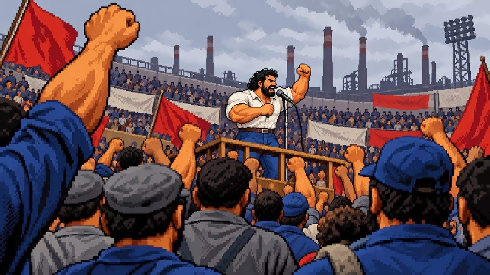

Tela cheia no iPhone: Compartilhar (no iOS 26 fica no •••) › Adicionar à Tela de Início. Depois abra o jogo pelo ícone.
OKA tela ficou ampliada. Toque duas vezes ou junte dois dedos para voltar.

A LUTA CONTINUA
Do metalúrgico do ABC à eleição de 2026,
cada capítulo tem a sua luta.
Jogue com o celular deitado.
DESENVOLVIDO POR Matheus Marques github.com/MatheusMarques13 mmarques.dev